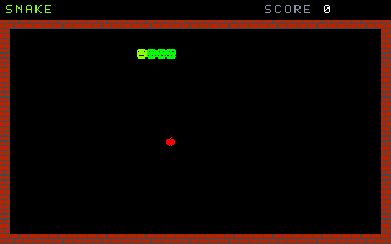
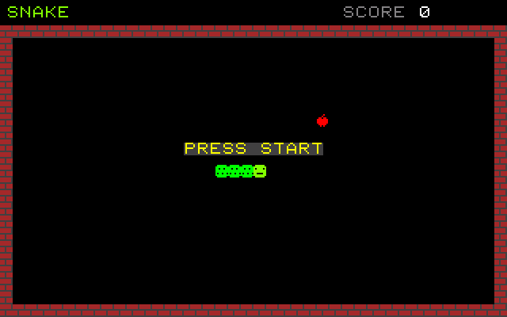
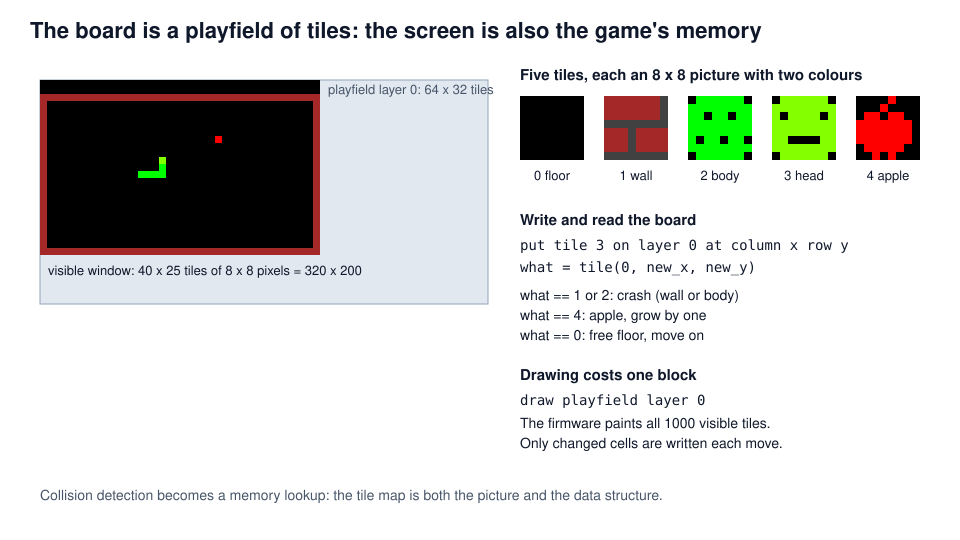
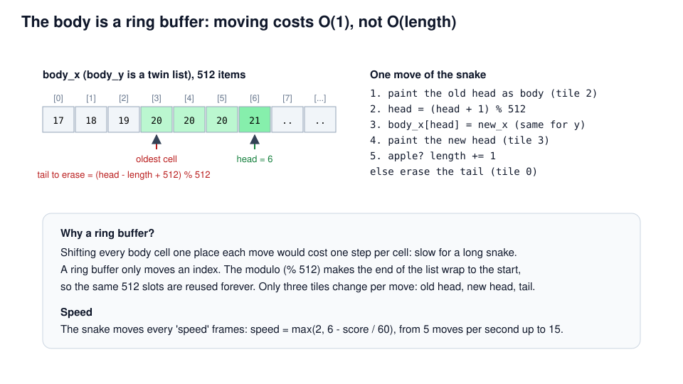
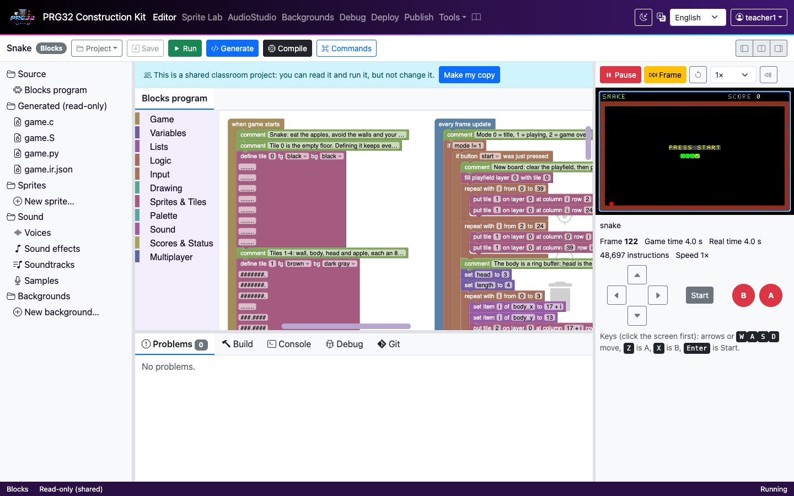
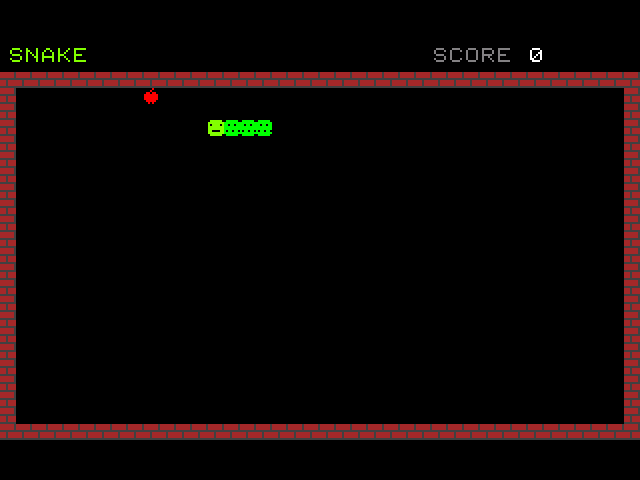

Snake
A grid world: tiles, playfields and a ring buffer
PRG32-Construction-Kit tutorial deck, step by step, from blocks to a RISC-V cartridge.

Learning outcomes
- design a game on a discrete grid where the screen is also the data structure;
- use the PRG32 tile and playfield API (
prg32_tile_define,prg32_playfield_put,prg32_playfield_get,prg32_playfield_draw); - store a growing body in a ring buffer with constant-time moves;
- separate input timing (every frame) from game timing (one move every N frames);
- place items with randomised retries and reason about their cost.
Prerequisites: the Breakout tutorial (lists). About 90 minutes.
Context
- The idea comes from Blockade (Gremlin, 1976), a two-player arcade game in which trails became walls.
- It reached hundreds of millions of people as Snake on Nokia phones from 1997 (Taneli Armanto's version for the Nokia 6110).
- Snake is a cellular game: the world is a grid, time advances in steps, and every rule is a local look-up.
Tile-based worlds power most 8-bit and 16-bit games. PRG32 provides them in firmware: two playfield layers of 64 x 32 tiles with scrolling.
Original, classic-inspired reimplementation for teaching; not affiliated with the historical products.
Rules and controls
| Button | Action |
|---|---|
| arrows | turn (never straight back) |
| START | start / play again |
- Eat apples to grow by one cell and score 10 points.
- Hitting a wall or your own body ends the game.
- Every 60 points the snake gets faster: from 5 to 15 moves per second.

The board is a playfield

Step 1 - Defining tiles
Step 1 - Tiles, explained
- A tile is an 8 x 8 picture with a foreground and a background colour: eight bytes plus two colours in firmware memory.
- Tile 0 is the floor. Define it explicitly: the ESP32 firmware paints an undefined tile with black, but other PRG32 runtimes may skip it.
- Tiles are defined once in when game starts; the board only stores tile numbers.
/* Tiles 1-4: wall, body, head and apple, each an 8 x 8 picture with two colours. */
prg32_tile_define(1, prg32_kit_bitmap_1, PRG32_COLOR_BROWN, PRG32_COLOR_DARK_GRAY);
prg32_tile_define(2, prg32_kit_bitmap_2, PRG32_COLOR_GREEN, PRG32_COLOR_BLACK);
prg32_tile_define(3, prg32_kit_bitmap_3, PRG32_COLOR_LIME, PRG32_COLOR_BLACK);
prg32_tile_define(4, prg32_kit_bitmap_4, PRG32_COLOR_RED, PRG32_COLOR_BLACK);
prg32_kit_fill(body_x, 512, 0);
prg32_kit_fill(body_y, 512, 0);Step 2 - A new board
- fill playfield writes tile 0 into all 64 x 32 cells.
- Two repeat blocks draw the walls: rows 2 and 24, columns 0 and 39 (the visible board is 40 x 25 tiles).
- Rows 0-1 stay empty for the score.
The body is a ring buffer

Step 3 - The snake and the first apple
Random retries are simple and almost always fast: with an empty board nearly every try succeeds. The repeat stops after 200 tries, so a full board can never freeze the game.
Step 4 - Steering
- Input is read every frame, but the snake moves only every few frames.
next_x,next_yremember the last valid choice until the next move. - A turn is accepted only across the current direction (
dir_x == 0for left/right): the snake can never reverse into its own neck.
Step 5 - Timing the moves
move_timer counts frames; at speed frames the snake moves one cell. At 30 FPS a speed of 6 is 5 moves per second.
Step 6 - Look before you move
tile(0, new_x, new_y) reads the playfield: collision detection is one memory read, whatever the length of the snake.
/* Look at the tile in front of the head: a wall or the body ends the game. */
new_x = prg32_kit_get(body_x, 512, head) + dir_x;
new_y = prg32_kit_get(body_y, 512, head) + dir_y;
what = prg32_kit_tile(0, new_x, new_y);
if (what == 1 || what == 2) {
mode = 2;
prg32_audio_note(1, 0, 36, 255, 600);
prg32_score_submit_current_player("Snake", score);
...Step 7 - Moving and growing
Only three cells change per move (old head, new head, tail), so the update costs the same for a snake of 4 or 400.
Step 8 - Drawing a whole world with one block
prg32_playfield_draw is firmware code: it draws the 1000 visible tiles from the map. The cartridge only keeps the rules.
Text is drawn after the tiles (painter's algorithm), on a dark-gray background so it stays readable.
Play it in the browser

- Dashboard, Examples, Snake (complete game), Add.
- Play, START, then steer with the arrows.
- Redraw the apple tile: edit the rows of define tile 4.
- Set
speedto 2 in when game starts for an expert mode.
Build and run the cartridge
Compile builds snake-esp32c6.prg32 and snake-qemu.prg32; download them from the links in the IDE's Build tab.
python3 -m prg32 qemu upload snake-qemu.prg32
python3 -m prg32 qemu run
PRG32-QT: Import Cartridge, or
prg32qt-headless snake-qemu.prg32 300 --dump-ppm snake.ppm

What the toolchain produced
| Measure | Value |
|---|---|
| Blocks | 3 stacks, 151 blocks |
| Generated C | 446 lines |
| RISC-V code (rv32imc) | 5120 bytes (+ 4 KiB for the two 512-item lists) |
| Firmware services | tiles and playfield (tilemap feature), audio |
| Verified on | simulator, QEMU firmware, PRG32-QT |
PRG32-QT found a portability detail: it skips tiles that were never defined, while the ESP32 firmware paints them black. Defining tile 0 makes the game identical everywhere.
Exercises
- Wrap-around arena: remove the walls and let the snake leave one side and enter on the other.
- Obstacles: add wall tiles at random places each time an apple is eaten.
- Two snakes: a second snake on the player 2 buttons, with its own ring buffer.
- Scrolling world: make the board 64 x 32 and follow the head with move playfield camera.
- Analysis: estimate the average number of retries to place an apple when half the board is full.
References
- PRG32 tiles and playfields (framework manual): https://github.com/riscv-prg32/PRG32
- PRG32-QT: https://github.com/riscv-prg32/PRG32-QT
- T. H. Cormen et al., Introduction to Algorithms, MIT Press: queues and circular buffers.
- Block reference (tiles, playfields, lists):
docs/blockly.md